88 SVGs in viewer/art/. Painterly-vector style: linear-gradient fills, fractal-noise overlays, soft drop shadows, NW light convention. Edge-segment SVGs (rivers, roads, lake shores, biome edges) compose against their base tile to handle natural stitching to neighbors. Files are intended to be loaded by the viewer at startup as PixiJS textures.
Hex viewBox 128×148, pointy-top, inscribed. Urban hex has 5 tier-specific variants — sparser at hamlet, denser and stone-built at large_city.
64×64 viewBox, ground line ≈ y=48. Each glyph has 3-tone shading + drop shadow + texture noise.
Tier-specific architecture: round wattle hut (hamlet) → cluster of houses (village) → multi-house town with bell tower → walled small city → multi-tower large city with grand temple.
Composed over terrain/river.svg (directionless water-base, central pool). One per connected neighbor edge. E / NE / NW / W / SW / SE.
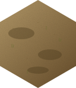
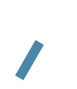
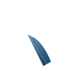
Stone-paved with parallel curbs and cobble joints.
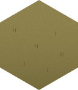
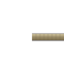
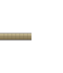
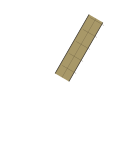
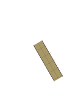
Wavy brown line with subtle drop shadow.
Sandy-grass band along ONE hex edge. Composited over terrain/lake.svg when that edge has land on the other side.
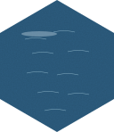
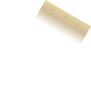
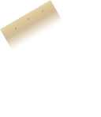
Color-tintable (color="currentColor") feather strips. The viewer sets the source-terrain color before rasterizing, replacing the procedural biome-edge darkening currently in hexMap.ts. Shown here in black.